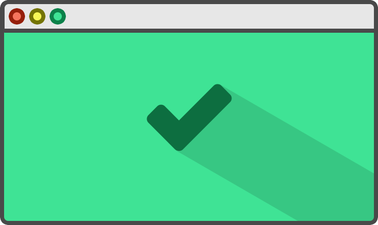
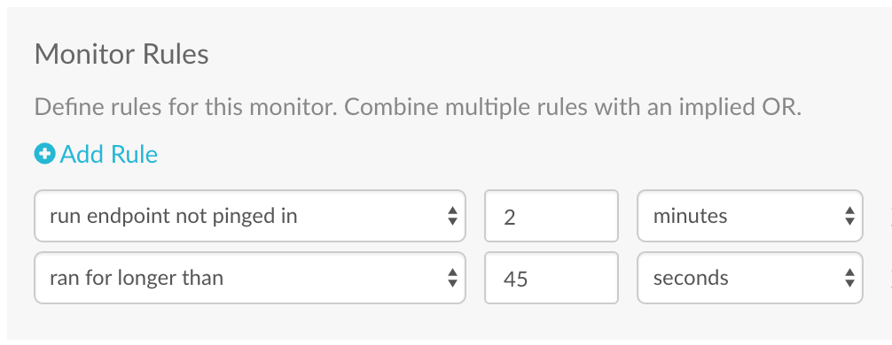

Easy cron monitoring
Intelligent cron job and scheduled task monitoring. Receive alerts when your jobs fail. See history and performance trends from any device. Sleep better at night with improved visibility into your jobs, tasks and scripts.Easy cron monitoring
Intelligent cron job and scheduled task monitoring. Receive alerts when your jobs fail. See history and performance trends from any device. Sleep better at night with improved visibility into your jobs, tasks and scripts.Easy cron monitoring
Intelligent cron job and scheduled task monitoring. Receive alerts when your jobs fail. See history and performance trends from any device. Sleep better at night with improved visibility into your jobs, tasks and scripts.How Cronitor Works
Define the rules your pings will be evaluated against. You will be given a unique ping URL.

Instrument your code with Cronitor pings. Ping both /run and /complete endpoints to monitor duration.
urlopen('https://cronitor.link/d3x0c1/run')
# Do Everything Here
urlopen('https://cronitor.link/d3x0c1/complete')
~ $ head important_script.py
from urllib2 import urlopenurlopen('https://cronitor.link/d3x0c1/run')
# Do Everything Here
urlopen('https://cronitor.link/d3x0c1/complete')
Want to see more?
Take a look at a read-only Cronitor dashboard
Used by individuals, startups and Fortune 500 companies
I was finding too many cases where our cron jobs would silently fail - we sometimes would not find out for days that a job was broken. Cronitor gives our team the confidence and peace of mind that if a job is not running, we'll know about it.
—— Gary Malouf, VP of Technology AdAgility
I was finding too many cases where our cron jobs would silently fail - we sometimes would not find out for days that a job was broken. Cronitor gives our team the confidence and peace of mind that if a job is not running, we'll know about it.
—— Gary Malouf, VP of Technology AdAgility
I was finding too many cases where our cron jobs would silently fail - we sometimes would not find out for days that a job was broken. Cronitor gives our team the confidence and peace of mind that if a job is not running, we'll know about it.
—— Gary Malouf, VP of Technology AdAgility
I was finding too many cases where our cron jobs would silently fail - we sometimes would not find out for days that a job was broken. Cronitor gives our team the confidence and peace of mind that if a job is not running, we'll know about it.
—— Gary Malouf, VP of Technology AdAgility
I was finding too many cases where our cron jobs would silently fail - we sometimes would not find out for days that a job was broken. Cronitor gives our team the confidence and peace of mind that if a job is not running, we'll know about it.
—— Gary Malouf, VP of Technology AdAgility
I was finding too many cases where our cron jobs would silently fail - we sometimes would not find out for days that a job was broken. Cronitor gives our team the confidence and peace of mind that if a job is not running, we'll know about it.
—— Gary Malouf, VP of Technology AdAgility
Monitoring Made Easy